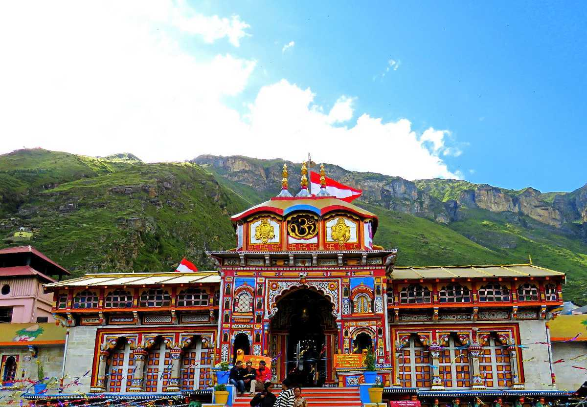
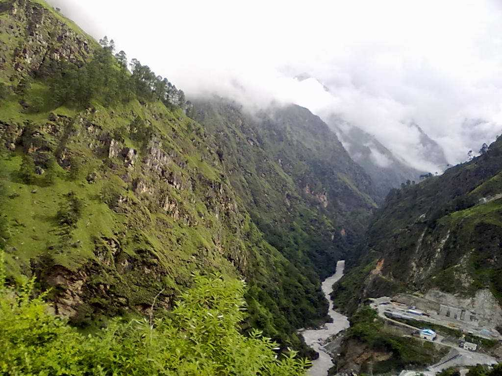
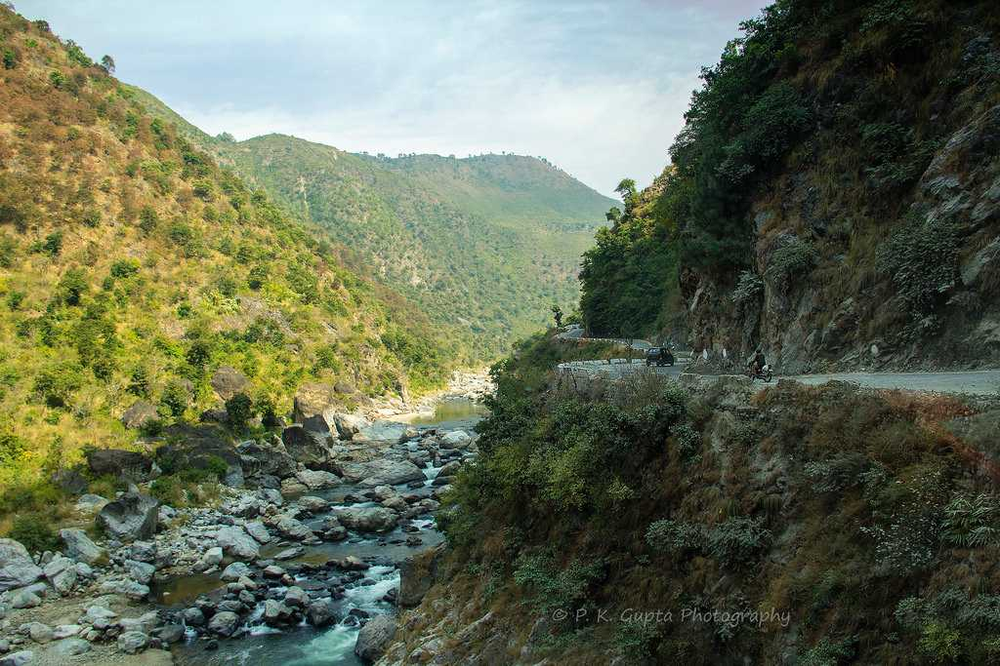

Rishikesh, known as the "Yoga Capital of the World," is a spiritual town in the foothills of the Himalayas, nestled on the banks of the Ganges River, famous for its yoga centers, ashrams, and adventure activities like white-water rafting.
Dehradun, the capital of Uttarakhand, is a city nestled in the Doon Valley, known for its pleasant climate and scenic beauty, serving as a gateway to popular hill stations and pilgrimage sites.
Mussoorie, often called the "Queen of the Hills," is a charming hill station in the Garhwal Himalayan range of Uttarakhand, known for its breathtaking views, cool weather, and colonial-era charm.
Haridwar, meaning "gateway to God," is a sacred Hindu pilgrimage city in Uttarakhand, India, situated where the Ganges River exits the Himalayan foothills and enters the Indo-Gangetic plains, known for its temples, ashrams, and the annual Kumbh Mela.
Kedarnath is a sacred Hindu pilgrimage site and one of the 12 Jyotirlingas of Lord Shiva, located in the Garhwal Himalayan range of Uttarakhand, India, at an altitude of 3,583 meters.

Badrinath Uttarakhand darshan tour packages - beauty of BadrinathBadrinath, a sacred Hindu pilgrimage site in the Garhwal Himalayas, is dedicated to Lord Vishnu and is one of the four Char Dhams, located on the banks of the Alaknanda River, between the Nar and Narayana mountain ranges.
Bhimtal, a picturesque lake town in Uttarakhand, India, is known for its serene Bhimtal Lake, which is the largest in the Kumaon region, and is situated at an altitude of 1,370 meters.

Joshimath, also known as Jyotirmath, is a town in the Chamoli district of Uttarakhand, India, serving as a gateway to Himalayan pilgrimage sites, trekking trails, and mountain expeditions, including Badrinath and Auli.
Rajaji National Park, a biodiversity hotspot in the foothills of the Himalayas, encompasses the Shivalik ranges and is home to diverse flora and fauna, including elephants, tigers, leopards, and various bird species.

Abbott Mount, a serene hill station in the Champawat district of Uttarakhand, India, is known for its breathtaking views of the Himalayas and a tranquil atmosphere, attracting nature lovers and peace seekers.

Bhowali, a town in Nainital District, Uttarakhand, is a scenic hill station known for its T.B. sanatorium, fruit orchards, and proximity to Nainital, serving as a gateway to the Kumaon region.

Janki Chatti, located in Uttarakhand, is the last village accessible by road or helicopter before the trek to Yamunotri, a sacred site in the Chota Char Dham Yatra, and is known for its hot springs and as a base camp for pilgrims.